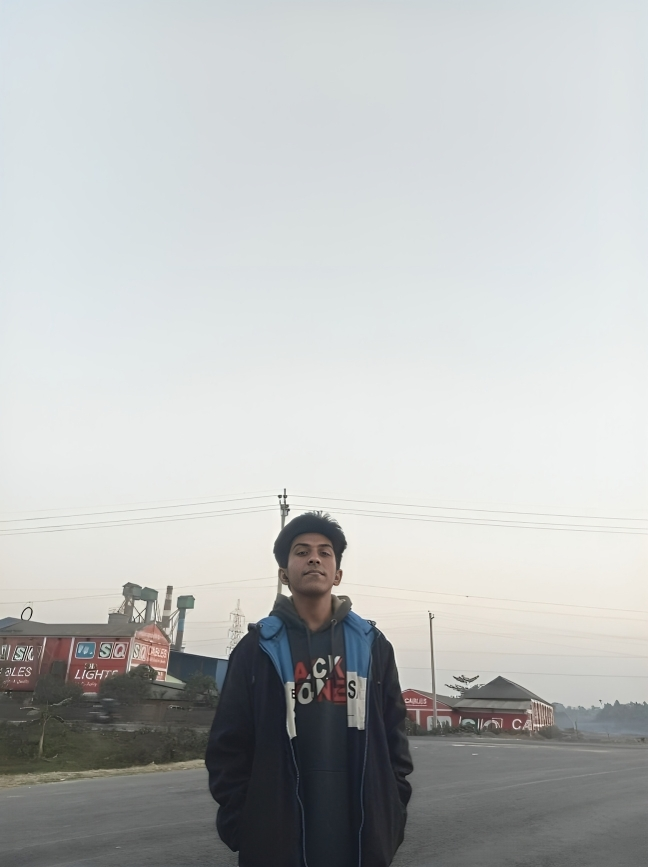

The next big thing in AI will come from Fraziym & Akik.
FRAZIYM builds local-first autonomous AI systems that give enterprises big-tech intelligence — without handing over their data, privacy, or control. One 19-year-old. One laptop. Two systems that shouldn't exist yet. They do.
Not a wrapper. Not a chatbot.
Every AI startup in 2025 built a wrapper around GPT-4 and called it innovation. FRAZIYM built original architectures — a sparse transformer that rewrites the math of how LLMs work, and an autonomous agent that runs entirely air-gapped on your device. No wrapper. No API middleman. No excuses.
Original Research
ZARX is not fine-tuned GPT. It's a from-scratch sparse adaptive architecture with HASS attention blocks, disk-sharded MoE, and Latent Chain-of-Thought — designed to do more with 90% fewer active parameters.
Truly Local
AXONIX-ZERO runs on your machine using your own models. Files don't leave your filesystem. Tokens don't leave your RAM. No telemetry. No cloud dependency. Full air-gap capability.
Radical Transparency
We show you the real build: beta status, what's broken, what's being fixed, what the roadmap actually is. No "GPT-5 level" claims. Just verified architecture, real test outputs, honest numbers.
Extreme Efficiency
ZARX-277M achieves 3B–7B model quality at 26M active parameters per token. That's a 50× cost reduction. Not a projection — it's the verified architecture result from the current codebase.
Autonomous Loops
AXONIX-ZERO doesn't just answer questions. It plans, executes, verifies, and replans — up to 5 full autonomous cycles with loop detection, retry logic, and LLM-verified task completion.
Built Different
One 19-year-old in Dhaka, Bangladesh. Laptop CPU only. No VC funding, no GPU cluster, no team. The architecture works because the math is right — not because we threw compute at it.
Two systems. Both shipping.
AXONIX-ZERO
The autonomous engineering agent that runs entirely on your machine. You give it a goal — it plans, executes, verifies, debugs, and delivers. No cloud. No API keys needed. No data leaves your device. Ships as a standalone axonix.exe for Windows.
ZARX Framework
Sparse Adaptive Intelligence — a from-scratch LLM architecture that routes each token through only the compute it actually needs. The result: 277M total parameters, 26M active per token, reasoning quality matching dense 3B–7B models. 90% sparsity at inference time. The architecture that founded FRAZIYM.
Your model. Your rules.
AXONIX-ZERO works with everything. One unified interface — your tools and prompts behave identically regardless of which backend is active.
Any Ollama model or local GGUF file works too. The backend list grows as new providers ship compatible APIs.
Small team. Outsized output.
Currently a solo operation built by one founder. Leadership positions are open for the right people who believe in local-first AI.


The math that makes it real.
3-pathway attention
Locality-optimized, Low-rank global, and Temporal State Space pathways. The router picks the cheapest one that maintains quality — per token, every token.
192 experts, 2 active
Experts live on disk. A predictive LRU cache keeps hot ones in RAM. Pre-fetching eliminates disk latency from the inference path. No VRAM required for the full expert set.
Internal reasoning state
A 6-vector internal state (Intention · Decomposition · Confidence · Contradiction · Direction · Summary) evolves layer by layer. The model reasons before it speaks.
What's being built.
Active projects, research work, and the roadmap for what comes next. Everything is open-status — no marketing fluff.
AXONIX-ZERO
Autonomous engineering agent. 8 backends, 20 tools, loop engine, web dashboard. Standalone Windows executable.
Status: ~90% complete · Active debugging
Full details →ZARX Framework
Sparse Adaptive Intelligence. HASS attention, disk-sharded MoE, L-CoT. The research project that founded this company.
Status: Architecture done · Awaiting GPU
Architecture →Agentic Services
Custom autonomous systems for enterprise — QA automation, infra watchtower, continuous code review, deployment playbooks.
Status: Design phase · Inquiries open
Inquire →FRAZIYM Studio
Team AI workspace. Shared memory, multi-agent workflows, project-level context, role-based access. Local deployment only.
Status: Concept phase
See all →FRAZIYM Foundry
Fine-tuning pipelines, GGUF quantization, release gates, private model registry. For teams running their own ZARX variants.
Status: Post-ZARX-training milestone
See all →ZARX Desktop App
Tauri + React UI with FastAPI inference server. Full offline ZARX deployment. No cloud dependency, no Python install needed.
Status: Phase 6 of ZARX roadmap
Roadmap →Help train ZARX on real GPUs
The architecture is done. The code passes every test. The math checks out. What's missing is a GPU that can run the large-scale training run on WikiText-103 and OpenWebText. Goal: $8,000 for a 3-month cloud GPU lease. No equity. Full transparency. Every update posted publicly.
Akik is 19, from Dhaka, Bangladesh, training on a laptop CPU with no external funding. This fundraiser is the bridge between "architecture proven" and "weights published on HuggingFace."
Where we actually are.
Architecture
ZARX core (HASS, ASR, L-CoT, MoE) verified. AXONIX-ZERO agent framework built. Web dashboard live. Both systems deployed locally.
Large-scale training
ZARX-277M needs GPU time for WikiText/OWT training. AXONIX-ZERO debugging toward 100% stability. Community fundraiser active.
Seed round & team
After weights are published and AXONIX reaches stable v1.0, raise a small seed round to hire a research lead and co-founder. Timeline: 6–9 months post-training.
Engineering transparency is non-negotiable.
We are candid about active beta work because reliability is foundational. Request a demo to see the real build — warts, active fixes, and the full roadmap to production-grade stability.